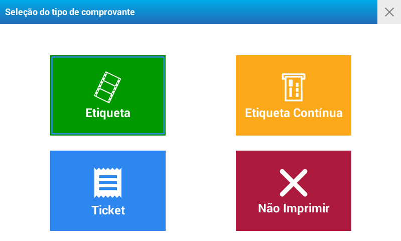

Venda de produtos
Venda de produtos no modo etiqueta
Para poder realizar a venda de produtos no modo etiqueta certifique-se que o rolo de etiquetas esteja instalado corretamente na balança.
Uma vez realizado a troca do rolo, será visualizado na tela da balança uma mensagem com três opções. Selecione Etiqueta

Impressão de etiquetas com produtos vendidos por peso
Selecione o produto utilizando uma das opções descritas em: Operação - Produtos
Coloque o produto a ser pesado sobre a balança.
Caso necessite modificar o valor do preço, pressione e digite o novo valor
Pressione a tecla
Impressão de etiquetas com produtos vendidos por unidade
Selecione o produto utilizando uma das opções descritas em: Operação - Produtos
Caso seja necessário modificar a quantidade, pressione e coloque a proporção de unidades que corresponda.
Para alterar o valor do preço, pressione e digite o valor do produto
Pressione a tecla
Multiplicação de produtos de venda unitária
Insira a quantidade
Pressione a tecla
À seguir pressione e insira o valor do preço da unidade
Aguarde um momento ou pressione
Pressione a tecla
Impressão automática de etiquetas (Modo Pré-empacotamento)
No modo Pré-empacotamento é utilizado quando se deseja etiquetar vários produtos do mesmo tipo com o mesmo CÓDIGO DE PRODUTO de maneira sucessiva, com a mínima intervenção do operador.
Neste modo é apresentado uma janela para manter ativo o último código de produto selecionado, sendo necessário somente colocar a mercadoria sobre a bandeja para que a balança emita uma etiqueta (produtos vendidos por peso).
É importante destacar que o modo de pré-empacotamento pode ser utilizado para etiquetar produtos que são pesados fora da presença do consumidor (exemplo: produtos a serem expostos em gôndolas).
Modo de operação: Pressione para ativar a função PRÉ-EMPACOTAMENTO. Verifique se a função foi ativada no visor.
Pré-empacotamento para um produto vendido por peso:
Selecione o produto.
Coloque o produto a ser pesado sobre a bandeja e ao estabilizar o peso, Será impressa a etiqueta.
Retire o produto da bandeja, coloque o novo produto e uma nova etiqueta será impressa.
Repita a operação quantas vezes for necessário.
Pré-empacotamento de um produto não pesável
Selecione o produto.
Automaticamente será emitida a etiqueta.
Para imprimir mais etiquetas, pressione a tecla quantas vezes seja necessário ou selecione um novo produto.
Venda de produtos no modo ticket
O modo ticket foi concebido para realizar a venda de vários produtos e realizar a soma com a impressão em um comprovante.
No mesmo ticket, serão visualizados os produtos de venda por peso, por unidade ou de venda unitária multiplicada.